클로드로 블로그 키워드 찾기
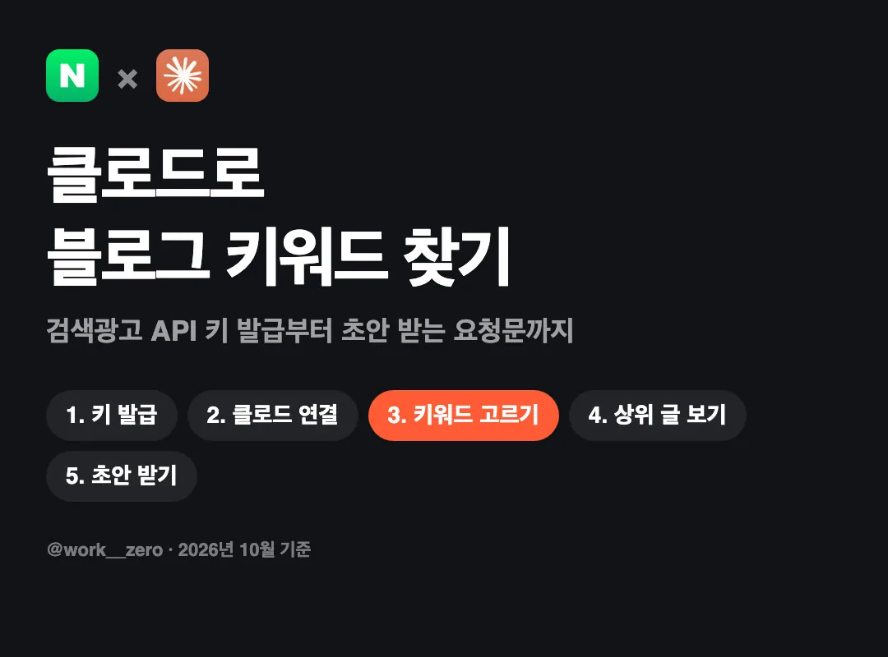
30초 요약
- 블로그 키워드를 감으로 고르지 않고, 네이버 검색광고 API의 실제 검색수를 클로드에 붙여서 골라요.
- 키워드 하나를 넣으면 연관 키워드 수백~천여 개가 검색수와 함께 오고, 클로드가 "사려는 사람이 검색할 단어"만 추려 줘요.
- 상위 글 목록은 네이버 공식 검색 API로 가져오고, 그 구조대로 제목·소제목·사진 메모까지 초안을 받아요. 바로 붙여 쓰는 요청문과 스크립트 전문을 함께 넣었어요.
- 예시는 '다이어트도시락'이지만 클라이언트 업종 단어로 바꿔 넣으면 그대로 돼요. 대행사·인하우스 마케터용 키워드 제안서 요청문도 넣었어요(6절 ④).
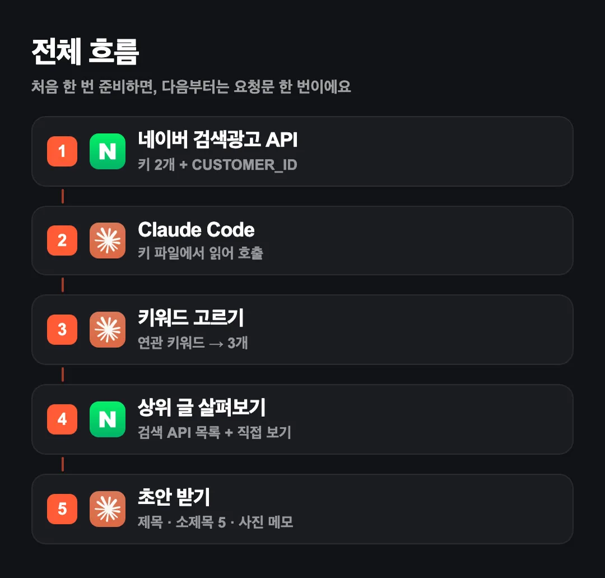
| 단계 | 쓰는 것 | 필요한 것 | 걸리는 시간 |
|---|---|---|---|
| 1. 검색수 키 발급 | 네이버 검색광고 API | 네이버 광고 계정 | 5분 |
| 2. 클로드에 연결 | Claude Code | Pro 이상 플랜 | 10분 |
| 3. 키워드 고르기 | 요청문 | — | 1분 |
| 4. 상위 글 살펴보기 | 네이버 검색 API(블로그) | 네이버 개발자센터 계정 | 10분 |
| 5. 초안 받기 | 요청문 | — | 1분 |
1. 왜 검색수로 고르나
블로그 키워드를 "이게 많이 찾겠지" 하고 고르면, 막상 검색하는 사람이 거의 없는 단어에 글을 쓰게 될 때가 많아요. 반대로 검색수가 너무 큰 단어는 이미 쓴 글이 많아서 내 글이 묻혀요. 네이버 검색광고 API의 키워드 도구는 키워드마다 최근 30일 PC·모바일 검색수를 알려 줘요. 이 숫자를 클로드에 주면, 내 상품과 이어지면서 검색수도 적당한 단어를 골라 줘요.
알아 두세요
- 키워드 도구가 주는 "경쟁 정도(낮음·중간·높음)"는 PC 광고 입찰 경쟁이에요. 블로그 글이 많고 적음과는 다른 지표라, 블로그 키워드를 고를 때는 참고만 해요.
- 검색수가 10 미만인 키워드는 숫자 대신
<10으로 와요.
2. 시작 전 준비
이것만 확인하세요
- 네이버 광고 계정: 검색광고 광고주 계정이 있어야 API 키를 받을 수 있어요. 가입은
searchad.naver.com에서 해요. - Claude Code: Pro, Max, Team, Enterprise 플랜에서 쓸 수 있어요. 무료 플랜에는 없어요.
- 터미널이 낯설면 Claude 데스크톱 앱에서 Claude Code를 써도 돼요.
Claude Code 설치(맥)는 터미널에 아래 한 줄이에요. 윈도우는 공식 문서의 PowerShell 명령을 쓰세요.
curl -fsSL https://claude.ai/install.sh | bash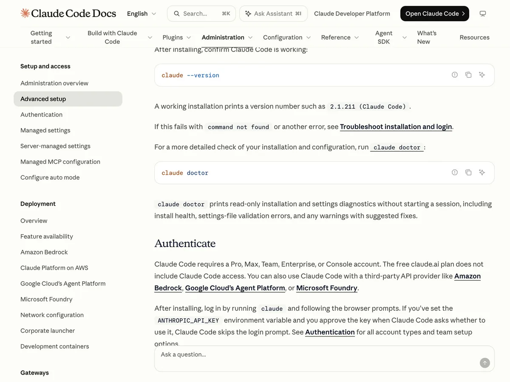
3. 검색광고 API 키 발급
ads.naver.com에서 검색광고 광고 계정으로 들어가요.- 왼쪽 메뉴 도구 → SA API 사용 관리를 눌러요.
- [네이버 검색광고 API 서비스 신청]을 누르고, 약관을 읽은 뒤 체크하고 [서비스 신청]을 눌러요.
- 화면에 엑세스라이선스, 비밀키, CUSTOMER_ID 세 개가 나와요. 키 옆 [복사] 버튼으로 복사해요.
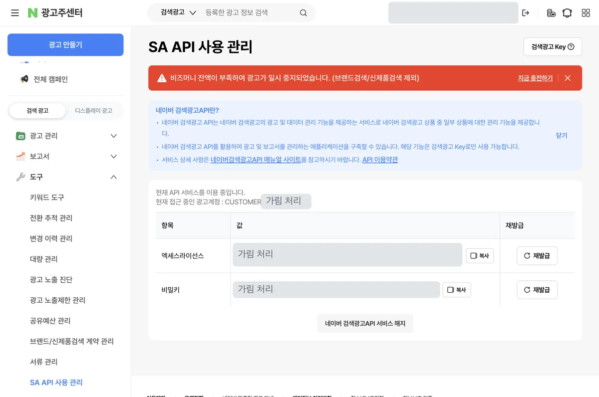
직접 해 보니
- 광고가 비즈머니 부족으로 일시 중지된 계정에서도 신청·발급·호출이 모두 됐어요(2026년 10월 14일 확인). 광고를 돌리지 않아도 키를 받을 수 있었어요.
- 신청과 호출 과정에서 결제 단계는 없었어요. 요금 정책은 공식 문서에 따로 적혀 있지 않아서, 바뀌면 이 가이드도 고칠게요.
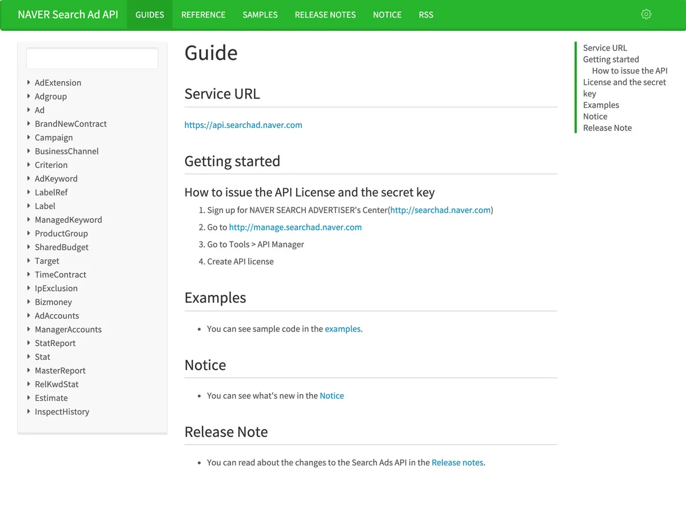
4. 키를 안전하게 두기
키는 클로드 대화창에 붙여 넣지 말고, 내 컴퓨터 파일 하나에 넣어 두세요. 클로드에게는 "이 파일에서 읽어"라고만 말하면 돼요. 맥 터미널에서 아래 한 줄을 실행하면 빈 파일이 만들어지고 텍스트 편집기로 열려요.
printf 'NAVER_SEARCHAD_API_KEY=\nNAVER_SEARCHAD_SECRET_KEY=\nNAVER_SEARCHAD_CUSTOMER_ID=\nNAVER_CLIENT_ID=\nNAVER_CLIENT_SECRET=\n' > ~/.config/naver-searchad.env && chmod 600 ~/.config/naver-searchad.env && open -e ~/.config/naver-searchad.env= 뒤에 복사한 값을 붙여 넣고 저장해요. 아래 두 줄(NAVER_CLIENT_…)은 5절에서 채워요.
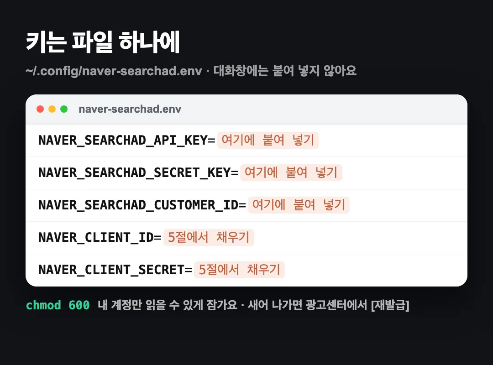
키가 새어 나갔다면 SA API 사용 관리 화면에서 해당 키 옆 [재발급]을 누르면 이전 키는 쓸 수 없게 돼요.
5. Claude Code에 연결
방법은 두 가지예요. 요청문으로 클로드가 직접 만들게 하거나, 아래 토글의 완성 스크립트를 그대로 쓰세요. 요청문 — 클로드가 스크립트를 만들게 하기
네이버 검색광고 API로 키워드 검색수를 가져오는 파이썬 스크립트 keywordstool.py를 만들어 줘.
- 키는 ~/.config/naver-searchad.env 에서 읽어 (NAVER_SEARCHAD_API_KEY, NAVER_SEARCHAD_SECRET_KEY, NAVER_SEARCHAD_CUSTOMER_ID). 키 값은 화면에 출력하지 마.
- GET https://api.searchad.naver.com/keywordstool 에 hintKeywords(쉼표 구분, 최대 5개, 띄어쓰기 없이)와 showDetail=1 을 보내.
- 헤더는 X-Timestamp, X-API-KEY, X-Customer, X-Signature. 서명은 "{timestamp}.GET./keywordstool"을 비밀키로 HMAC-SHA256 해서 base64.
- 결과는 JSON 파일로 저장하고, PC+모바일 합계가 큰 순으로 상위 20개를 표로 보여 줘. "<10"은 5로 계산해.
만들면 "다이어트도시락"으로 한 번 실행해서 결과를 보여 줘.완성 스크립트 — keywordstool.py (직접 붙여 쓰기)
"""네이버 검색광고 API 키워드 도구 — 연관 키워드별 최근 30일 검색수(PC·모바일)와 광고 경쟁 정도.
python3 keywordstool.py 다이어트도시락 --out keywords.json
키는 ~/.config/naver-searchad.env 에서 읽어요. 키 값은 화면에 출력하지 않아요.
공식 문서: https://naver.github.io/searchad-apidoc/
"""
import argparse, base64, hashlib, hmac, json, os, sys, time, urllib.parse, urllib.request
ENV = os.path.expanduser(os.environ.get("NAVER_ENV_FILE", "~/.config/naver-searchad.env"))
BASE = "https://api.searchad.naver.com"
def load_env(path=ENV):
vals = {}
with open(path) as f:
for line in f:
line = line.strip()
if line and not line.startswith("#") and "=" in line:
k, v = line.split("=", 1)
vals[k.strip()] = v.strip().strip('"').strip("'")
need = ["NAVER_SEARCHAD_API_KEY", "NAVER_SEARCHAD_SECRET_KEY", "NAVER_SEARCHAD_CUSTOMER_ID"]
missing = [k for k in need if not vals.get(k)]
if missing:
sys.exit(f"비어 있는 값: {', '.join(missing)} ({path})")
return vals
def call(method, uri, params, env):
ts = str(int(time.time() * 1000))
sig = base64.b64encode(hmac.new(env["NAVER_SEARCHAD_SECRET_KEY"].encode(),
f"{ts}.{method}.{uri}".encode(), hashlib.sha256).digest()).decode()
req = urllib.request.Request(f"{BASE}{uri}?{urllib.parse.urlencode(params)}", method=method, headers={
"X-Timestamp": ts, "X-API-KEY": env["NAVER_SEARCHAD_API_KEY"],
"X-Customer": env["NAVER_SEARCHAD_CUSTOMER_ID"], "X-Signature": sig})
with urllib.request.urlopen(req, timeout=30) as r:
return r.status, json.load(r)
def num(v): # 검색수가 10 미만이면 "<10" 문자열로 와요
return 5 if isinstance(v, str) else v
def main():
ap = argparse.ArgumentParser()
ap.add_argument("keywords", nargs="+", help="최대 5개, 띄어쓰기 없이")
ap.add_argument("--out")
ap.add_argument("--top", type=int, default=15)
a = ap.parse_args()
kws = [k.replace(" ", "") for k in a.keywords][:5]
try:
status, data = call("GET", "/keywordstool", {"hintKeywords": ",".join(kws), "showDetail": "1"}, load_env())
except urllib.error.HTTPError as e:
sys.exit(f"HTTP {e.code}: {e.read().decode()[:300]}")
rows = data.get("keywordList", [])
if a.out:
with open(a.out, "w") as f:
json.dump({"queried_at": time.strftime("%Y-%m-%d %H:%M:%S"), "hint": kws, "keywordList": rows}, f, ensure_ascii=False, indent=1)
rows.sort(key=lambda r: -(num(r["monthlyPcQcCnt"]) + num(r["monthlyMobileQcCnt"])))
print(f"HTTP {status} · 연관 키워드 {len(rows)}개")
print(f"{'키워드':<16}{'PC':>9}{'모바일':>10}{'합계':>10} 경쟁")
for r in rows[:a.top]:
pc, mo = r["monthlyPcQcCnt"], r["monthlyMobileQcCnt"]
print(f"{r['relKeyword']:<16}{str(pc):>9}{str(mo):>10}{num(pc)+num(mo):>10,} {r.get('compIdx','')}")
if __name__ == "__main__":
main()실행: python3 keywordstool.py 다이어트도시락 --out keywords.json
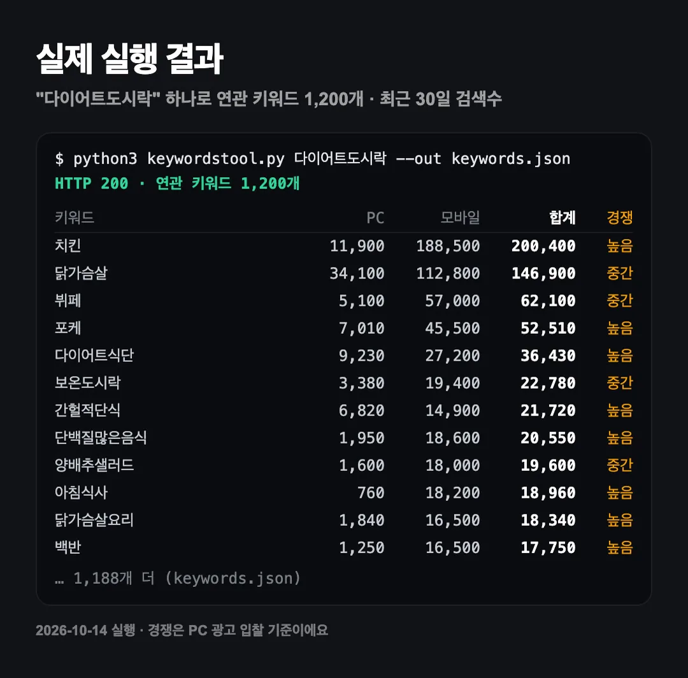
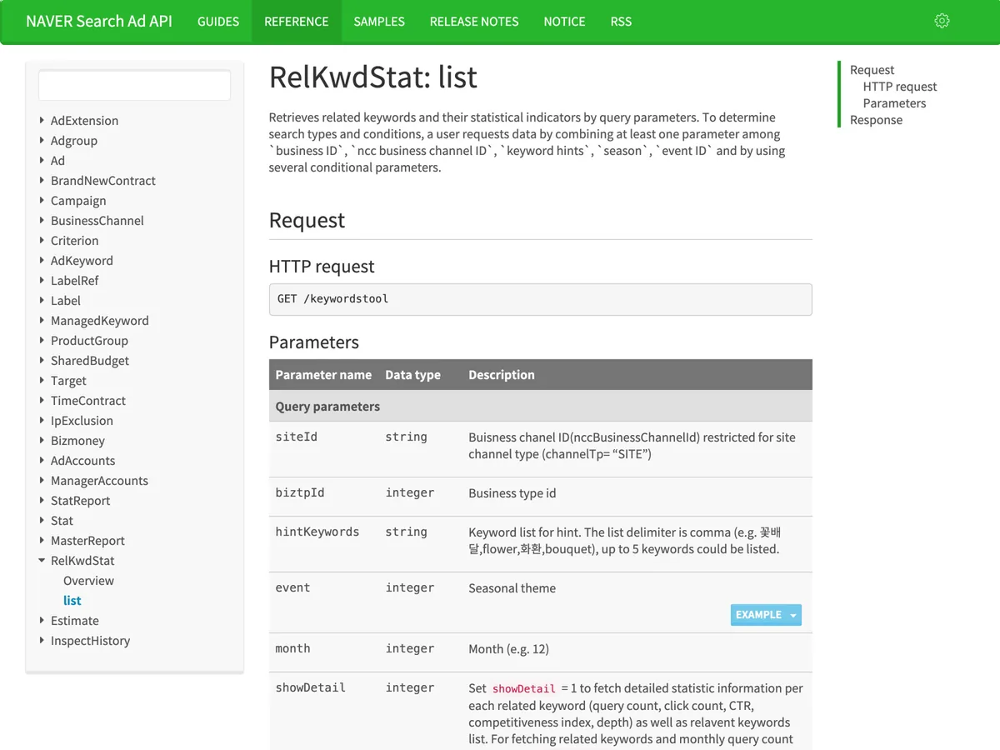
6. 키워드 고르기 — 바로 쓰는 요청문 4개
keywords.json이 생겼다면 아래 요청문을 그대로 붙여 넣으세요. { } 안만 내 상황으로 바꾸면 돼요. 업종 단어는 클라이언트마다 바꿔 넣으면 되고, 힌트 키워드는 한 번에 5개까지 넣을 수 있어요(예: 필라테스,요가,PT,헬스장,스트레칭). ① 구매형 — 바로 살 사람이 검색할 단어
keywords.json 은 네이버 검색광고 키워드 도구로 뽑은 연관 키워드야. {다이어트 도시락} 파는 사장님 블로그에 쓸 키워드 3개만 골라 줘.
기준: {다이어트 도시락}과 바로 이어질 것, 월 검색수(PC+모바일) 1,000~10,000, 사려는 사람이 검색할 단어.
compIdx는 광고 입찰 경쟁이라 참고만 해. 키워드 · 월 검색수 · 고른 이유 한 줄로 표 하나만 줘.② 정보형 — 사기 전에 알아보는 사람의 단어
keywords.json 에서 {다이어트 도시락}을 사기 전에 정보를 찾는 사람이 검색할 단어(방법, 추천, 비교, 후기, 칼로리 같은 말이 붙은 것) 3개를 골라 줘.
월 검색수 500~10,000. 각 키워드로 쓸 글 제목 한 줄도 같이 줘.③ 지역형 — 동네 손님이 검색할 단어
keywords.json 에서 지역 이름이 들어간 키워드만 모아 줘. 그중 {성수동}이나 근처 지역과 {다이어트 도시락}이 같이 들어간 조합을 검색수 순으로 5개 골라 줘.
없으면 hintKeywords에 "{성수동다이어트도시락}"을 넣어서 다시 뽑자고 말해 줘.④ 마케터용 — 클라이언트에게 보낼 키워드 제안서
keywords.json 은 {클라이언트 업종} 연관 키워드야. 클라이언트에게 보낼 블로그 키워드 제안서를 만들어 줘.
- 구매형 3개, 정보형 3개, 지역형 3개로 나눠서 표로 (키워드 · 월 검색수 · PC/모바일 비율 · 고른 이유)
- 맨 위에 "이번 달 추천 1순위" 한 줄과 이유
- 검색수는 최근 30일 기준이고, 경쟁 정도는 광고 입찰 기준이라 참고만 했다고 표 아래에 적어 줘
- 클라이언트가 읽을 문서니까 전문 용어는 풀어서 써 줘클라이언트가 여러 곳이면 업종 단어만 바꿔 같은 요청문을 돌리면 돼요. 매달 같은 형식의 제안서가 나와요.
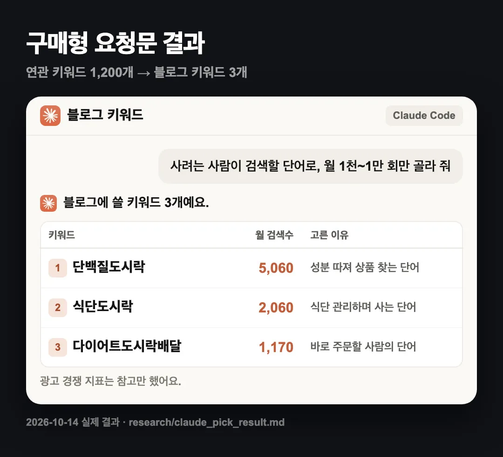
| 키워드 | 월 검색수 | 클로드가 고른 이유 |
|---|---|---|
| 단백질도시락 | 5,060 | 다이어트하는 사람이 성분을 따져 상품을 찾을 때 쓰는 단어 |
| 식단도시락 | 2,060 | 식단 관리용으로 도시락을 사려는 사람이 쓰는 단어 |
| 다이어트도시락배달 | 1,170 | "배달"이 붙어 바로 주문할 사람이 쓰는 단어 |
2026년 10월 14일 "다이어트도시락"으로 뽑은 실제 결과예요. 검색수는 최근 30일 기준이라 날마다 조금씩 달라요.
7. 상위 글 살펴보기
고른 키워드로 이미 상위에 있는 글이 어떤 모양인지 봐야 내 글 구조를 잡을 수 있어요. 목록은 네이버 공식 검색 API로 가져오고, 본문은 직접 열어 봐요. ① 네이버 개발자센터에서 키 받기
developers.naver.com→ Application → 애플리케이션 등록- 사용 API에서 검색을 골라요.
- 등록하면 Client ID와 Client Secret이 나와요. 4절에서 만든 파일의
NAVER_CLIENT_ID,NAVER_CLIENT_SECRET에 넣어요.
검색 API는 하루 25,000번까지 부를 수 있어요.
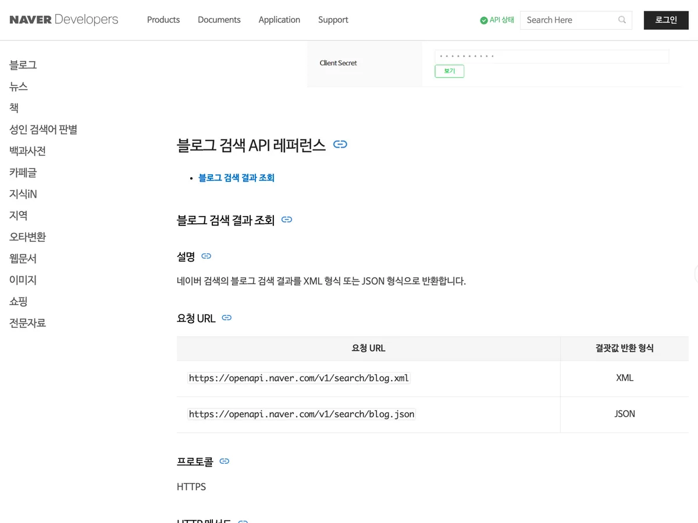
② 상위 글 목록 받기 — 요청문
네이버 검색 API(블로그)로 "{단백질도시락}" 검색 결과 상위 10개 글 목록을 가져오는 파이썬 스크립트 blog_search.py를 만들어 줘.
- GET https://openapi.naver.com/v1/search/blog.json, query, display=10, sort=sim
- 헤더 X-Naver-Client-Id, X-Naver-Client-Secret. 키는 ~/.config/naver-searchad.env 의 NAVER_CLIENT_ID, NAVER_CLIENT_SECRET에서 읽고 출력하지 마.
- 제목·요약·날짜·링크를 표로 보여 주고 top.json 으로 저장해.
그다음 제목 10개의 공통점을 정리해 줘: 자주 들어간 단어, 후기·추천·비교 중 어떤 유형인지, "직장인 점심"처럼 상황을 넣었는지.완성 스크립트 — blog_search.py (직접 붙여 쓰기)
"""네이버 검색 API(블로그) — 키워드의 블로그 검색 결과 상위 글 목록(제목·요약·날짜·링크).
python3 blog_search.py 단백질도시락 --out top.json
키는 ~/.config/naver-searchad.env 의 NAVER_CLIENT_ID, NAVER_CLIENT_SECRET 을 읽어요(네이버 개발자센터에서 발급).
공식 문서: https://developers.naver.com/docs/serviceapi/search/blog/blog.md (하루 25,000회)
"""
import argparse, html, json, os, re, sys, urllib.parse, urllib.request
ENV = os.path.expanduser(os.environ.get("NAVER_ENV_FILE", "~/.config/naver-searchad.env"))
def load_env(path=ENV):
vals = {}
with open(path) as f:
for line in f:
line = line.strip()
if line and not line.startswith("#") and "=" in line:
k, v = line.split("=", 1)
vals[k.strip()] = v.strip().strip('"').strip("'")
missing = [k for k in ("NAVER_CLIENT_ID", "NAVER_CLIENT_SECRET") if not vals.get(k)]
if missing:
sys.exit(f"비어 있는 값: {', '.join(missing)} ({path})")
return vals
def clean(t):
return html.unescape(re.sub(r"</?b>", "", t))
def main():
ap = argparse.ArgumentParser()
ap.add_argument("keyword")
ap.add_argument("--n", type=int, default=10, help="가져올 글 수(최대 100)")
ap.add_argument("--out")
a = ap.parse_args()
env = load_env()
q = urllib.parse.urlencode({"query": a.keyword, "display": a.n, "start": 1, "sort": "sim"})
req = urllib.request.Request(f"https://openapi.naver.com/v1/search/blog.json?{q}", headers={
"X-Naver-Client-Id": env["NAVER_CLIENT_ID"], "X-Naver-Client-Secret": env["NAVER_CLIENT_SECRET"]})
try:
with urllib.request.urlopen(req, timeout=20) as r:
data = json.load(r)
except urllib.error.HTTPError as e:
sys.exit(f"HTTP {e.code}: {e.read().decode()[:300]}")
items = [{"rank": i + 1, "title": clean(x["title"]), "summary": clean(x["description"]),
"date": x["postdate"], "link": x["link"]} for i, x in enumerate(data.get("items", []))]
if a.out:
json.dump({"keyword": a.keyword, "items": items}, open(a.out, "w"), ensure_ascii=False, indent=1)
print(f"'{a.keyword}' 블로그 검색 결과 {data.get('total', 0):,}건 중 상위 {len(items)}개 (정확도순)")
for x in items:
print(f"{x['rank']:>2}. {x['date']} | {x['title'][:50]}")
if __name__ == "__main__":
main()실행: python3 blog_search.py 단백질도시락 --out top.json
③ 본문은 직접 열어 보고 숫자만 메모 API는 제목·요약·날짜까지만 줘요. 사진이 몇 장인지, 소제목을 썼는지는 상위 글 3~5개를 직접 열어 보고 아래처럼 적어서 클로드에 주세요.
상위 글 메모
1위: 사진 약 25장, 소제목 있음(종류별로 나눔), 글 길이 길다
2위: 사진 약 15장, 소제목 있음(옵션 정리), 글 길이 중간
3위: 사진 약 20장, 소제목 없음, 사진 + 짧은 문단왜 본문은 직접 보나요 네이버는 블로그·검색 페이지에서 AI 봇의 자동 수집을 막아 두었어요(robots.txt). 그래서 이 가이드는 공식 API로 목록만 받고, 본문은 사람이 보는 방식으로 안내해요.
8. 초안 받기
{단백질도시락}으로 쓸 우리 가게 블로그 글 초안을 써 줘.
- 참고 1: top.json 상위 글 제목의 공통점
- 참고 2: 아래 상위 글 메모
{여기에 7절 메모 붙여 넣기}
제목 1개, 소제목 5개, 소제목마다 들어갈 사진 1줄 메모.
다른 블로그 문장은 쓰지 말고 구조만 참고해. 우리 가게 정보가 없는 곳은 {상품명} {가격}처럼 비워 둬.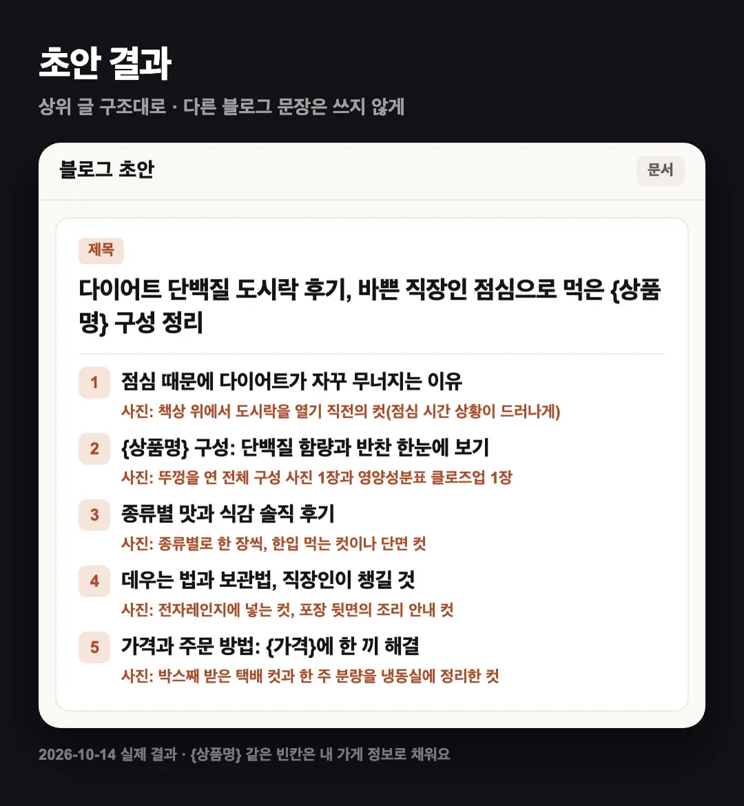
9. 한 번에 시키는 요청문
스크립트 두 개와 키 파일이 준비됐다면, 다음부터는 이 한 메시지면 돼요.
"{다이어트도시락}"으로 블로그 글 하나 준비해 줘.
1) keywordstool.py로 연관 키워드를 뽑아 keywords.json에 저장해.
2) 사려는 사람이 검색할 단어 중 월 검색수 1,000~10,000인 키워드 3개를 표로 골라 줘(경쟁 정도는 참고만).
3) 그중 1위 키워드로 blog_search.py를 돌려 상위 10개 제목의 공통점을 정리해.
4) 내가 상위 글 메모를 주면, 그 구조대로 제목 1개 + 소제목 5개 + 사진 메모 초안을 써 줘. 다른 블로그 문장은 쓰지 마.10. 자주 묻는 질문
돈이 드나요? 검색광고 API는 신청·호출 과정에서 결제 단계가 없었어요(직접 확인). 네이버 검색 API는 하루 25,000번까지예요. Claude Code는 Pro 이상 유료 플랜이 필요해요. 광고를 안 돌려도 되나요? 광고 계정은 있어야 해요. 광고가 일시 중지된 상태에서도 키 발급과 호출이 됐어요. 검색수가 <10으로 나와요. 최근 30일 검색수가 10 미만이라는 뜻이에요. 블로그 키워드로는 너무 작아요. 경쟁 정도가 "높음"인데 써도 되나요? 경쟁 정도는 PC 광고 입찰 기준이에요. 블로그 글 경쟁과는 달라서, 상위 글을 직접 살펴보고 판단하는 게 정확해요. 힌트 키워드는 몇 개까지 넣을 수 있나요? 한 번에 5개까지, 쉼표로 구분해요. 띄어쓰기는 빼고 넣어요. 키가 새어 나간 것 같아요. 검색광고 키는 SA API 사용 관리에서 [재발급]을 누르세요. 이전 키는 쓸 수 없게 돼요.
11. 공식 링크
- 네이버 검색광고 API 문서:
https://naver.github.io/searchad-apidoc/ - 네이버 광고시스템:
https://ads.naver.com - 네이버 검색 API(블로그) 문서:
https://developers.naver.com/docs/serviceapi/search/blog/blog.md - Claude Code 설치:
https://code.claude.com/docs/en/setup
2026년 10월 15일 기준으로 확인했어요. · @work__zero